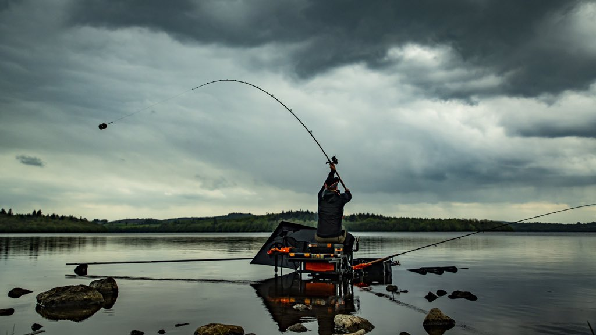
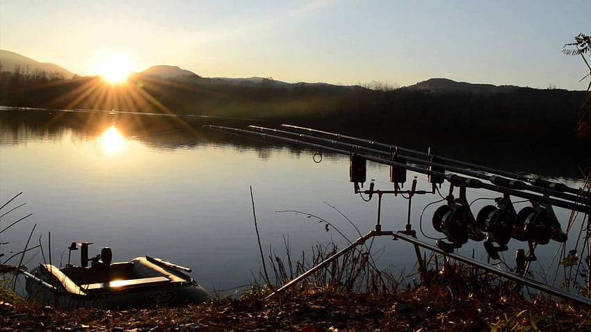
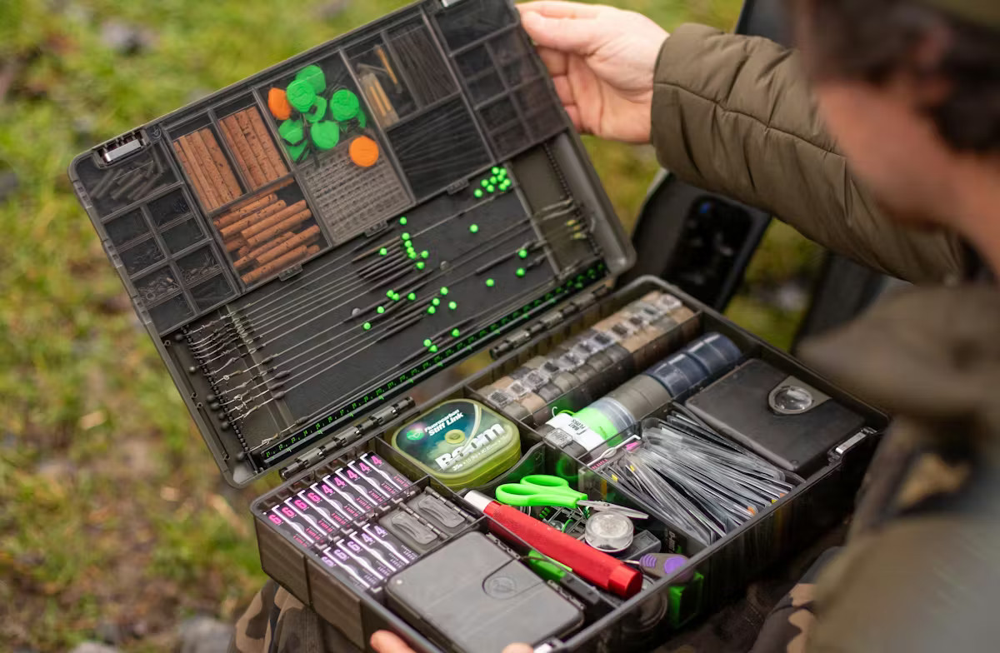

Method Feeder

Method feeder to popularna metoda wędkarska, w której używa się podajnika, aby przyciągnąć ryby w naszą strefę łowienia. Do podajnika wsypuje się pellet, a na haczyku umieszcza przynętę, np. pellet czy waftersy. Pellet stopniowo uwalnia się w wodzie, przyciągając ryby w pobliże naszej przynęty. Metoda ta jest szczególnie skuteczna przy łowieniu ryb karpiowatych w jeziorach i rzekach.
Karpiarstwo

Karpiarstwo to specjalistyczna metoda wędkarska, skoncentrowana na połowie ryb karpiowatych – ryb słodkowodnych o dużych rozmiarach. Technika opiera się na strategicznym zastosowaniu zanęty i przynęty, które przyciągają ryby w wybrane miejsce, umożliwiając skuteczny połów. Skuteczne karpiarstwo wymaga odpowiedniego przygotowania stanowiska, doboru sprzętu oraz cierpliwości, co czyni je zarówno wyzwaniem, jak i formą rekreacji dla wędkarzy na każdym poziomie zaawansowania.
Wyposazenie
Dobór sprzętu jest kluczowy do osiągnięcia lepszych wyników
podczas naszych połowów. To te czynniki decydują o powodzeniu
naszego wyjazdu. Wędki, kołowrotki, żyłki, przynęty itp.
Samodzielne uwiązanie przyponu, odpowiednie rozstawienie
podpórek, przygotowanie zanęty.
Więcej o doborze sprzętu i przygotowaniu można dowiedzieć się
niżej.
